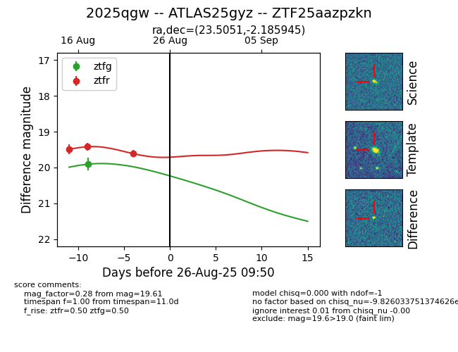

Target 2025qgw at 2025-08-26 09:50, see:
FINK: fink-portal.org/ZTF25aazpzkn
Lasair: lasair-ztf.lsst.ac.uk/objects/ZTF25aazpzkn
ALeRCE: alerce.online/object/ZTF25aazpzkn
TNS: wis-tns.org/object/2025qgw
YSE: ziggy.ucolick.org/yse/transient_detail/2025qgw
alt names
ZTF25aazpzkn (ztf,fink)
2025qgw (tns,yse)
ATLAS25gyz (atlas)
coordinates:
equatorial (ra, dec) = (23.5051,-2.18595)
galactic (l, b) = (146.9707,-63.05300)
photometry
last ztfg=19.91, ztfr=19.61
1 ztfg, 3 ztfr detections
